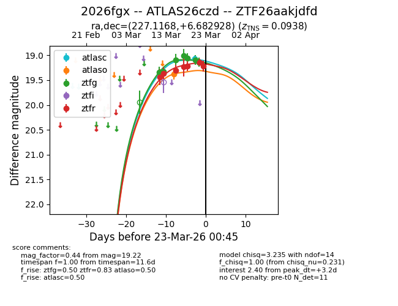
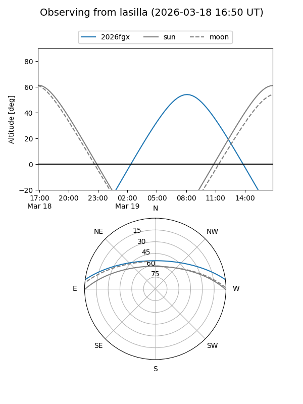
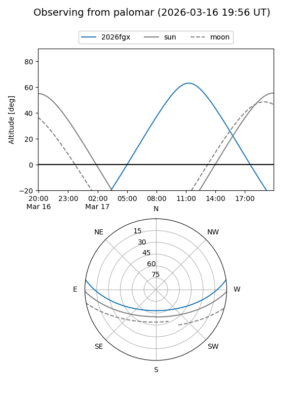
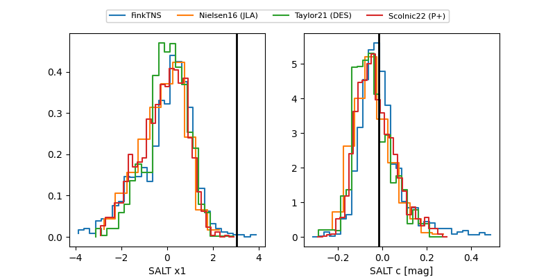

2026fgx
Target 2026fgx at 2026-03-23 00:47
Aliases and brokers:
FINK: link
Lasair: link
ALeRCE: link
TNS: link
YSE: link
alt names
ZTF26aakjdfd (ztf,fink_ztf)
2026fgx (tns,yse)
ATLAS26czd (atlas)
Coordinates:
equatorial (ra, dec) = 227.1168,+6.68293
equatorial (HMS+DMS) = 15:08:28.03,+06:40:58.54
galactic (l, b) = (7.0926,+51.59672)
Flags:
confirmed ia
Photometry:
last atlasc=19.07, atlaso=19.38, ztfg=19.14, ztfr=19.22
1 atlasc, 1 atlaso, 7 ztfg, 7 ztfr detections
Lightcurve

Visibility


Additional plots
